École Supérieure de l'Économie NumériqueUniversité de la Manouba
L'ESEN en quelques mots
Plus qu'une école, un état d'esprit
Depuis 2004, l'ESEN forme les talents de l'économie numérique, là où la technologie
rencontre le business.
Interdisciplinarité
Technologies et management réunis par un corps enseignant de renom. Ici, Business et Digital se conjuguent.
Créativité
Une formation ancrée dans le monde socio-économique, qui encourage l'entrepreneuriat et la création de start-up.
Engagement
Une école citoyenne qui forme des étudiants responsables, pour l'Université, la Manouba et le pays.
L'ESEN en chiffres
2004année de création
+35partenaires
8clubs
+75enseignants
4parcours de licence
+1200étudiants
6mastères
30adminis- tratifs
ESEN · L'école02 / 06
Licence · Bac + 3
Licence en Business Computing
1Tronc commun en 1ère année→4parcours au choix en 2ème et 3ème années
BI
Business Intelligence
De la donnée à la décision
Objectifs
Former des diplômés capables de concevoir, configurer et déployer des systèmes d'aide à la décision et des systèmes d'extraction et de gestion de connaissances.
Former des compétences ayant pour vocation d'apporter aux décideurs une aide à la décision pour avoir une vue d'ensemble de l'activité de l'entreprise.
Débouchés
Concepteur
Développeur
Intégrateur
Data Scientist
Analyste de données
Business Intelligence Analyst
Gestionnaire de comptes clients
BIS
Business Information Systems
Concevoir et gouverner les SI
Objectifs
Former des diplômés pouvant être immédiatement opérationnels dans le domaine des technologies des systèmes d'information des entreprises.
Former des compétences élémentaires en termes de gouvernance et de management des SI.
Débouchés
ICT Business Analyst
Consultant ERP
Chef de projet IT
Développeur web
Développeur Cloud
Gouvernance des données
Consultant transformation digitale
eB
E-Business
Du business au digital
Objectifs
Former des professionnels capables de participer à la transformation digitale des organisations, de mettre en place et de suivre la faisabilité d'un projet e-business.
Former des compétences avancées en management et en informatique, tout en développant le sens stratégique nécessaire pour saisir les occasions d'affaires qu'offrent Internet et les innovations organisationnelles.
Débouchés
E-Business Manager
Chef de projet digital
Digital Business Analyst
ICT Business Analyst
Développeur web
Communication digitale
Consultant transformation digitale
eB
E-Business à distance
100 % à distance · avec l'UVT
Objectifs
Former, en co-diplomation avec l'Université Virtuelle de Tunis, des professionnels capables de piloter la transformation digitale des organisations et de conduire des projets e-business.
Un parcours entièrement à distance, pour les professionnels en activité et les diplômés en reprise d'études.
Débouchés
Junior ICT Business Analyst
Web Developer
Project Coordinator IT / Digital
Digital Communication Specialist
Junior Digital Business Analyst
Assistant E-Business Manager
Junior Digital Transformation Consultant
ESEN · Licence03 / 06
Mastères · Bac + 5
Aller plus loin, se spécialiser
DSSD
Data Science and Software Development
Mastère professionnel
Former des spécialistes capables d'utiliser des outils statistiques et informatiques pour accompagner et faciliter la prise de décisions à travers l'analyse de données.
Former des spécialistes capables de configurer, gérer et faire évoluer les bases de données.
Former des spécialistes capables d'assurer le développement, l'amélioration et la mise en œuvre des applications informatiques.
Métiers
Administrateur de bases de données
Développeur d'applications web et mobiles
Data scientist, analyste de données, analyste business intelligence
eB
E-Business
Mastère professionnelPrésentiel et à distance avec le CNFCPP
Comprendre les enjeux liés au e-business.
Acquérir un savoir-faire dans le développement informatique d'un projet de e-commerce.
Connaître les technologies des systèmes d'information pour innover dans le développement des systèmes de commerce électronique et dans les pratiques de commercialisation.
Intégrer les pratiques de digitalisation dans la stratégie globale de l'entreprise.
Appréhender le e-commerce dans sa globalité : tableau de bord, droit, conduite du changement.
Métiers
Analyste d'affaires
Analyste de données
Concepteur, développeur, chef de projet
Consultant en e-business
Expert en médias numériques
VIC
Veille et Intelligence Compétitive
Mastère professionnel · ESEN · ISCAE
Acquérir des savoir-faire dans le domaine de l'intelligence informationnelle.
Acquérir des savoirs permettant une lecture de la complexité des environnements multiformes auxquels sont soumis les organisations, les territoires et les régions.
Valider les acquis par une mise en application concrète au sein des organisations publiques ou privées, des territoires et des régions.
Métiers
Chef de projet VIC
Médiateur intermédiaire VIC
Chargé de la veille stratégique et de l'intelligence compétitive
Consultant en management de l'information
Courtier, analyste de l'information
WI
Web Intelligence
Mastère de recherche
Former des spécialistes capables d'aborder des activités de recherche et d'ingénierie liées au Web Intelligence, principalement l'intelligence artificielle et les technologies d'information avancées.
Initier des projets de recherche multi-acteurs et organiser des échanges de coopération avec des universités internationales dans le domaine du WI.
Débouchés
Intégrer des entreprises dédiées aux activités Web
Mener une carrière d'enseignant-chercheur
Cadre en recherche et développement
CGBI
Contrôle de Gestion et Business Intelligence
Mastère professionnelESEN · ISCAE · URCA
Former des cadres capables de concilier des compétences pointues en contrôle de gestion et en pilotage des organisations et une forte opérationnalité en business intelligence et en systèmes d'information décisionnels.
Acquérir des compétences académiques, managériales, techniques et technologiques quant aux métiers du contrôle de gestion.
Métiers
Consultant en contrôle de gestion
Consultant en Business Intelligence
Contrôleur de gestion (central, commercial, industriel)
ESEN · Mastères04 / 06
Vie étudiante
Nos clubs
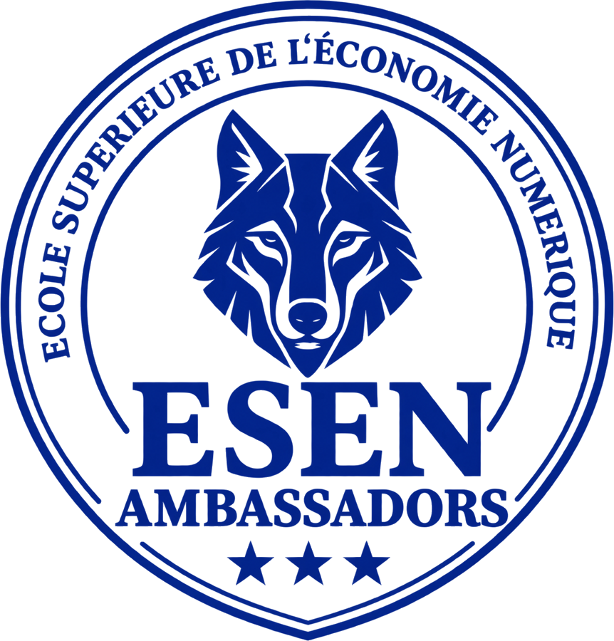
ESEN Ambassadors
Orientation & campus
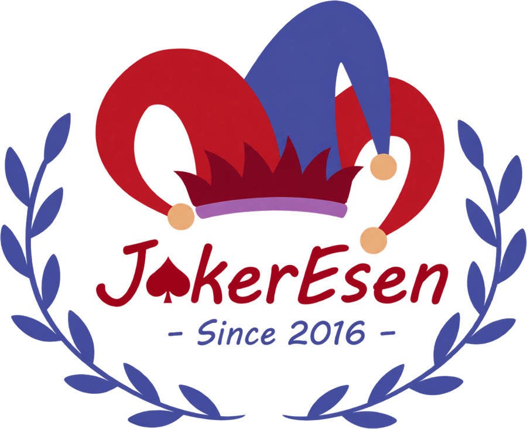
Joker ESEN
Culture & solidarité
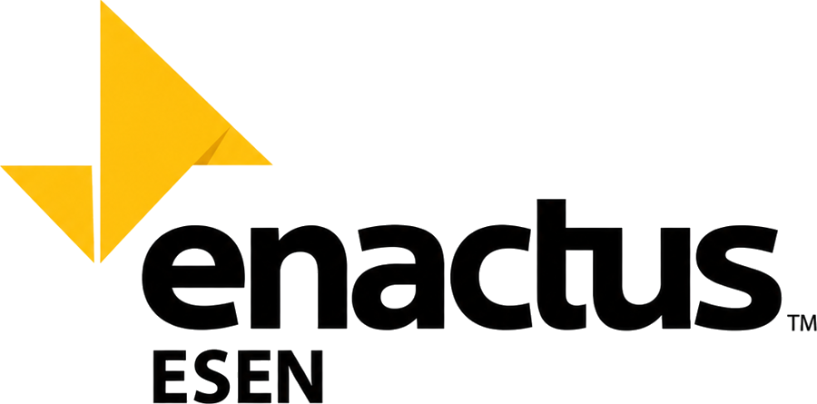
Enactus ESEN
Entrepreneuriat social
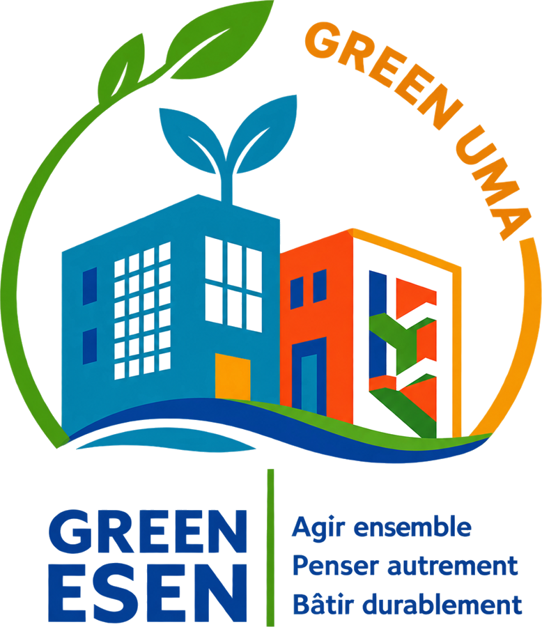
Green UMA ESEN
Développement durable
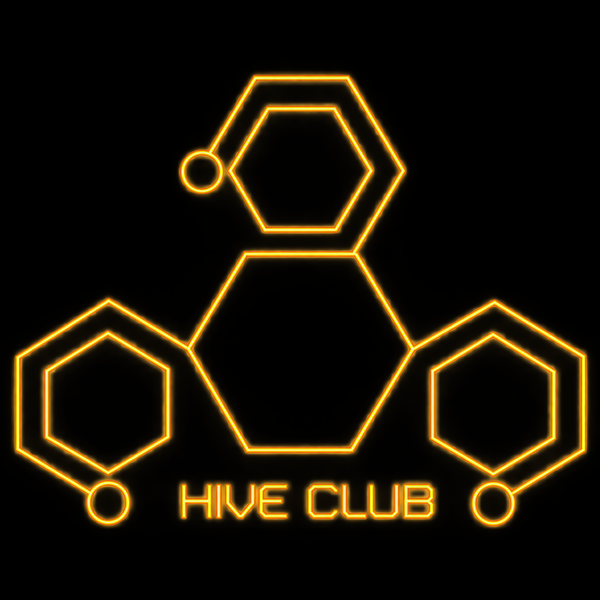
ESEN Hive Club
Programmation
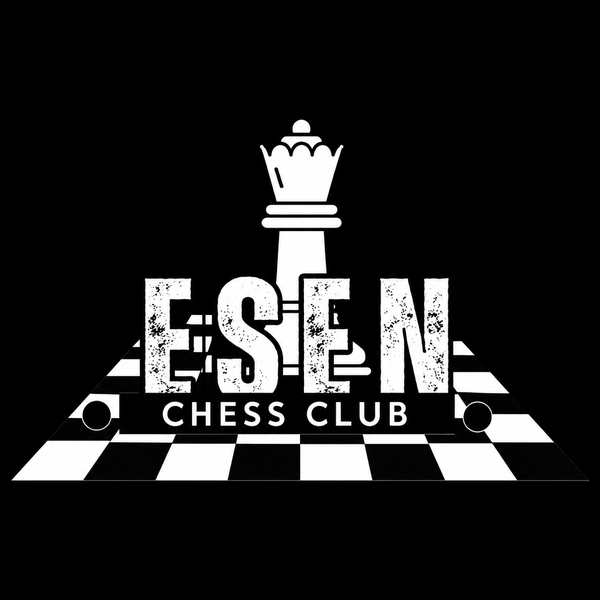
ESEN Chess Club
Stratégie
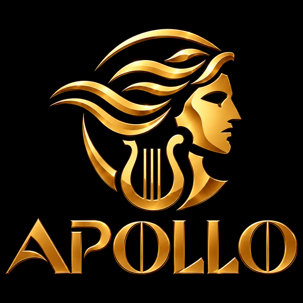
Apollo
Arts & musique
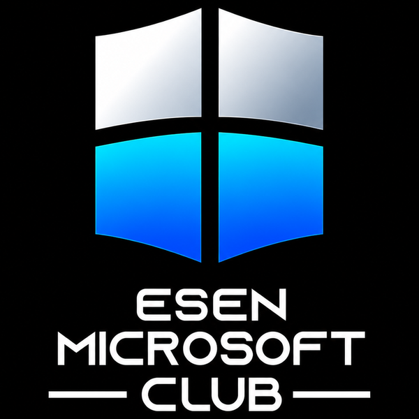
ESEN Microsoft Club
Technologies Microsoft
Ils nous font confiance
Nos partenaires
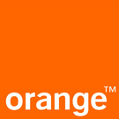
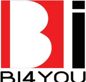
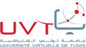
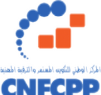
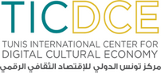
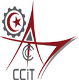
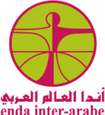
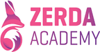
+35partenaires
ESEN · Clubs & partenaires05 / 06
Contact
Restons connectés.
Une question sur nos formations, un projet de partenariat ? Choisissez votre canal et scannez.
Site webwww.esen.tn
FacebookESEN · École Supérieure de l'Économie Numérique
LinkedInÉcole Supérieure de l'Économie Numérique (ESEN)